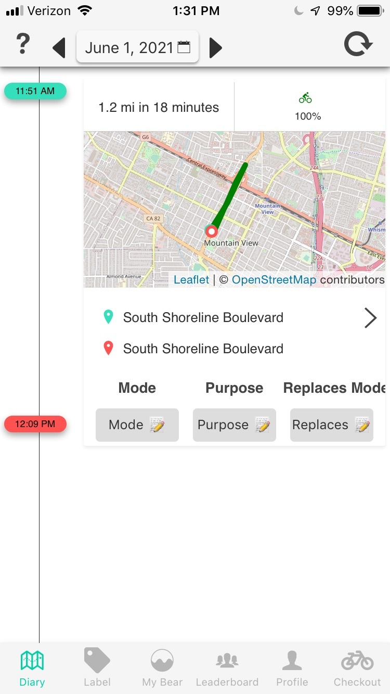
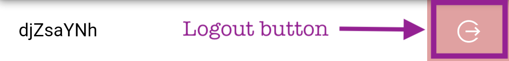

Frequently Asked Questions
What is the purpose of the Can Do Colorado eBike Program?
This program is funded through the Colorado Energy Office and the City and County of Denver and is designed to demonstrate that electric bikes (eBikes) are a safe, healthy, and convenient way to travel around town. Program participants receive an eBike and accessories at no cost.
As a participant, what is expected of me?
Keep the eBike in good working order, use it for trips, follow safety and traffic laws, do not loan it out, and securely store it when not in use. Participants will use the CanBikeCo App on their smartphone to collect trip data and complete surveys on a regular basis. Participants are expected to use the app through the duration of the program (September 2023).
Who sees my data and how will it be used?
This program is monitored by the Colorado Energy Office (CEO), your local program administrator(s), and the National Renewable Energy Lab (NREL). Your information will not be shared outside of those partners and it will not be used to track you for any purpose besides energy research conducted by NREL and the CEO. It will only be used for insight into travel habits and CO2 savings generated by switching from automobile and transit trips to trips on an eBike.
At the conclusion of the program, the data will be archived in the Transportation Secure Data Center (TSDC) at NREL, to support long-term anonymous transportation research and analyses. Additional detail about the TSDC is available below.
Your data is being put to good use, helping us better the way Coloradans travel around our state.
For more information, please select the ‘View Privacy Policy’ under the Profile tab in the app.
Inside the app, what do the different icons in the bottom menu bar represent?
- ‘Diary’ is where you log your day-to-day trips.
- ‘Label’ shows a log of all your trips. Use the “Unlabeled” button to quickly find any entries where the Mode, Purpose, and Replacement Mode tabs are grayed out. This means you need to record the trip. Once you’ve entered data under each tab, it turns green.
- ‘My Bear’ shows how environmentally-friendly your trips are compared to other participants. The larger the bear, the more environmentally sustainable options you’ve recorded.
- ‘Leaderboard’ shows you how all your trips compare to other participants.
- My score is a combination of trips labeled and their accuracy.
- “x”% means x% of trips have been labeled.
- “x”% eBike ‘replace mode’ means that x% of eBike trips have their “replaced mode” labeled correctly.
- ‘Profile’ tab shows various subtabs to reset the app, change username, respond to weekly surveys, upload logs when requested by NREL for troubleshooting purposes, etc.
- My score is a combination of trips labeled and their accuracy.
- “x”% means x% of trips have been labeled.
- “x”% eBike ‘replace mode’ means that x% of eBike trips have their “replaced mode” labeled correctly.
Does the app need to be on the entire time?
Yes, the app needs to be open in the background for it to track your data. This means that you should NOT force-kill the app.
How do I know that the app is working properly?
✔️ There are no notifications asking you to change settings
✔️ The trips that you take are being recorded correctly
✔️ The trips change from green (draft) to white (processed) after some time.
| Draft | Processed |
|---|---|
 |
 |
How do I fix the tracking?
📱 On android: Click on error notifications and accept the prompted permissions
📱 On iOS: Follow any instructions in the notifications
📱 On both: Turn tracking off and on (Profile -> Tracking)
📱 On both: Log out and log in again (Profile -> Pink button next to your token)

📱 If none of those worked, upload error logs (Profile ->
Upload log). Enter a detailed description of the problem and wait until the
data has been completely sent. This may take 2-3 minutes.
What does "Ensure always permission" mean?
Ensure that the app has permission to access your location
"always" so we can capture all your trips.
| iOS | android |
|---|---|
What does the "Please don't force-kill" prompt mean on iPhones?
Please don't kill the app by swiping up. In order to save battery, we automatically turn off the location when you are not moving. But if you force-kill, then the APIs we use do detect trip start and end don't always work.
|
|
What if I have no data plan or my data plan is limited?
You can turn off background data for this app. The app will continue to work, and will store data on the phone until the phone has WiFi. The trips will remain in draft mode until they are uploaded and analysed on the server.
- The exact instructions will depend on your phone model; search "android restrict app background data usage" for details. On Pixel phones running Android 10, for example, this is at Settings -> Network and Internet -> Mobile Network -> App Data Usage -> CanBikeCO -> Turn off Background data
- The exact instructions will depend on iOS version; search "iOS turn off cellular data" for details. On iOS 12, for example, this is at Settings -> Cellular -> Turn off for CanBikeCO
| iOS | android |
|---|---|
Will this drain my battery?
Not much. We have been careful to optimize battery usage by reading the locations only when you are moving, so the battery drain is proportional to your travel time. We have validated this by carrying multiple identical test phones. We had tracking disabled on one of the phones and enabled on the others. This allowed us to estimate the excess power drain caused by the tracking in this app. For additional details, please see sections 6.2 and 7.2 of the related PhD thesis.
| Travel time | iOS | android | |
|---|---|---|---|
| 40 mins | < 5% extra | < 5% extra | |
| 3 hours | ~ 5% extra | ~ 5% extra | |
| 6 hours | ~ 10% extra | ~ 35% extra |
How do I confirm my trips?
Find trips with gray labels. Select values from the drop down. Ensure that all trips have green labels
|
|
What does "Download new UI update" mean?
It means that we have made a minor change to the UI. Download and extract the update to see the new UI
|
|
What is the TSDC and how does it protect my information?
The TSDC was created in 2009 to address the challenge of maximizing research returns from original transportation data while protecting the privacy of participants. The project is supported by the U.S. DOT and the U.S. DOE and is hosted at the National Renewal Energy Laboratory’s (NREL’s) Center for Integrated Mobility Sciences, located in Colorado. Examples of recent research enabled by TSDC data include assessing electric vehicle adoption, public transit gaps and active transportation potential. Detailed information on the TSDC’s operating procedures is available on the website and in this publication and fact sheet. To summarize this information: The TSDC uses a two-level access approach that enables detailed location data to be used for legitimate research in a way that maintains the anonymity of survey participants. “Cleansed” versions of the datasets (with no latitude-longitude data or other sensitive details) are made available for public download from the TSDC website (www.nrel.gov/tsdc). For access to detailed spatial data, a potential user must submit an application detailing the scope of their work and sign a legal agreement certifying that they will not attempt to identify individuals from the data. Approval is required from a committee of government, industry and university stakeholders before the user is granted access to connect to a secure virtual desktop. In this environment, users have the chance to work with the full spatial details of a dataset, however no micro-data can be removed and aggregated results/charts are reviewed by TSDC staff before providing them to approved users.
|
|